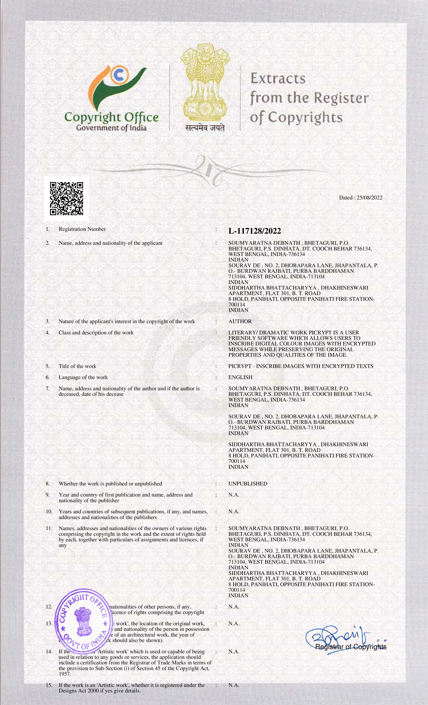

Picrypt - Inscribe Images with Encrypted Texts
Picrypt is a simple, user-friendly tool that lets you hide passcode-protected messages inside digital color images. You can save these encrypted images locally and share them anywhere, keeping your messages secure and accessible only to the intended recipient with the right passcode.
Abstract
Inspired by the principle "why send less, when you can send more," Picrypt is a user-friendly software featuring a clean and simplistic interface, designed for inscribing digital color images with passcode-protected messages. This software allows users to download and locally save these inscribed images, which can then be sent digitally across the globe while preserving and protecting the embedded data message. The passcode used to inscribe the messages serves as the key for successful decryption, ensuring that the messages remain secure and accessible only to intended recipients.
